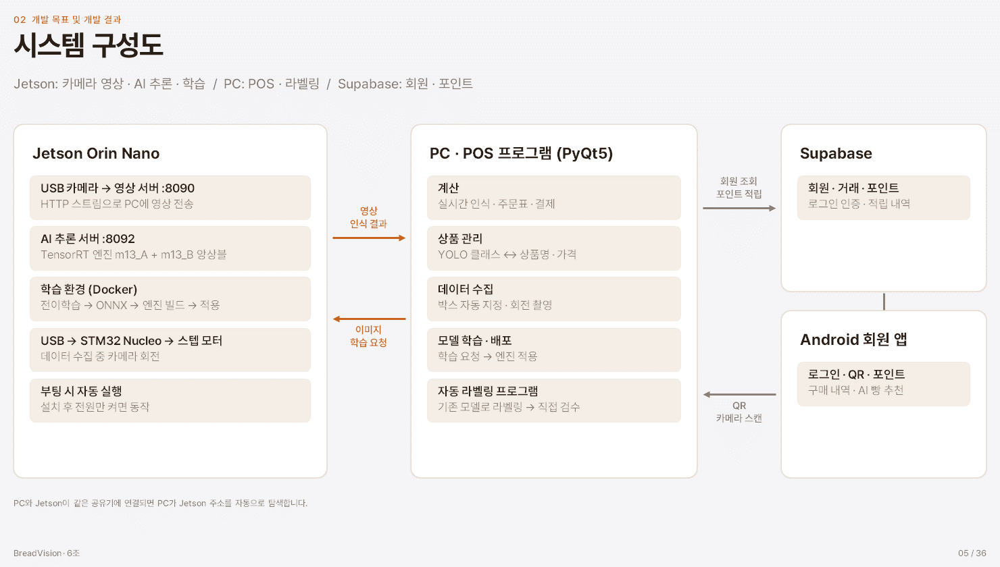

2026.09 · 팀 4인
BreadVision
카메라로 빵 12종의 종류와 개수를 인식해 자동 계산하는 AI POS
1. 프로젝트 개요
- 프로젝트명
- BreadVision (AI 빵 인식 POS)
- 수행기간
- 2026.09.02 ~ 2026.09.15
- 수행인원
- 4인
- 담당역할
- 인식 모델 학습·성능 비교(주 담당), 학습 데이터 촬영(전담), 데이터셋 라벨링(공동)
- 사용 기술
- Python, Ultralytics YOLO(v8n / 11n / 26n), Google Colab, ONNX, TensorRT, Jetson Orin Nano
- 링크
- GitHub
2. 개발 배경 및 목적
- 베이커리 빵에는 바코드가 없어, 계산 시 직원이 빵을 하나씩 확인해 수동 입력해야 하는 번거로움과 입력 오류 가능성
- 빵의 모양을 학습시켜 카메라 인식만으로 간편하게 결제하는 POS 개발
3. 개발 목표
- 빵 12종 실시간 인식 및 개수 집계
- Jetson Orin Nano 기반 엣지 추론
- POS 화면의 주문표·결제 연동
4. 시스템 구성
- 카메라 → Jetson Orin Nano(TensorRT 추론) → PC POS(PyQt5) → 주문표·결제
- 회원 QR 적립 앱 연동

시스템 구성도
5. 주요 구현 내용
5.1 학습 데이터 구축
- 빵 12종 자체 촬영: 학습 1,629장, 검증 408장
- 카메라 이동 기구 제작: 3D 출력물, 폼보드, 스텝 모터 2개로 카메라 좌우 이동·회전 구성 (기존 좌우 이동 스텝 모터 1개에 제자리 회전 스텝 모터 추가)
- 배경 정리 및 다양한 구도 확보
- 데이터셋 라벨링 (공동)
5.2 모델 비교 및 선정
- YOLOv8n / YOLO11n / YOLO26n을 동일 데이터로 100 epoch 학습 (Google Colab)
- mAP50-95 (YOLOv8n / YOLO11n / YOLO26n): 검증 0.982 / 0.983 / 0.981, 테스트 0.971 / 0.972 / 0.980, 어려운 클래스(로투스) 0.852 / 0.917 / 0.930
- 테스트 mAP는 YOLO26n이 가장 높았으나, Jetson 실시간 인식 오류는 YOLO11n 22건, YOLO26n 78건
- 실사용 조건 오류 건수 기준으로 YOLO11n 선정
- ONNX 변환 후 Jetson에서 TensorRT로 추론
6. 문제 해결
6.1 유사 빵 오인식
- 문제
- 첫 모델 오류 38건, 대부분 포장된 휘낭시에 3종(색만 다름)과 로투스·플레인 간 혼동
- 시도
- 2단계 분류 구조 적용 → 오류 56건으로 악화, 미채택
- 원인 확인
- 오류 이미지 검토 결과, 라벨 오류와 포장 상태 이미지 부족
- 해결
- 포장 상태 이미지 110장 추가 촬영, 라벨 20장 수정
- 결과
- 오류 38건 → 22건
7. 결과
- 트레이 위 빵 인식, 주문표 생성, 결제 흐름 시연

8. 느낀 점
- 모델 구조 변경보다 데이터 품질 개선의 효과가 더 크다는 점
- 평균 점수보다 실제 사용 조건의 오류 건수와 오류 이미지를 확인해야 한다는 점